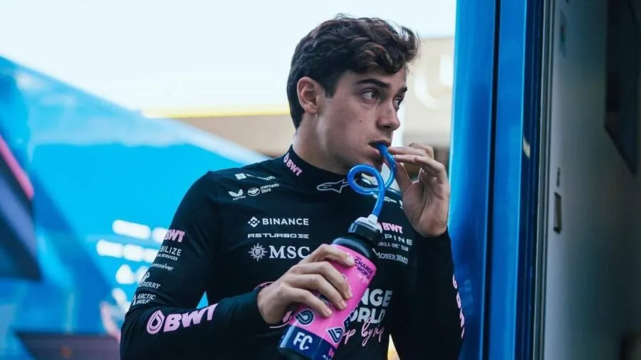
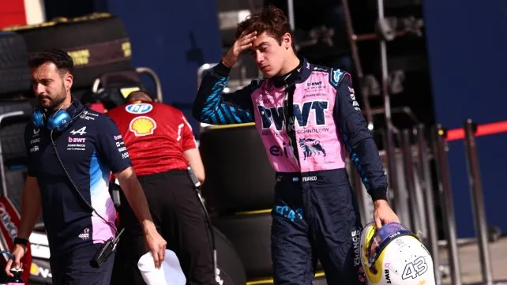

F1Motion
F1MotionEl piloto argentino habló sobre lo mal que la pasó durante la carrera por el andar de su Alpine
publicado por Tiago Monaco

En cuanto la carrera se larga, la fisonomía del paddock cambia completamente. Los integrantes de los equipos que no están afectados directamente al trabajo en pista comienzan con el desarmado de los hospitality y a guardar los elementos que ya no se van a utilizar. Cuando la bandera de cuadros se baja, el paddock es una estampida. Llegar al corralito de prensa ya no es una tarea sencilla como hasta ante del comienzo de la carrera. Cajas, embalajes, hasta hielo seco desparramado en el piso hay en el camino hacia el sector de prensa. Allí, deben concurrir todos los pilotos. El que primero se va es Lance Stroll, no muy afecto a las notas. Franco Colapinto está en la atención a los medios de TV, que tienen un espacio amplio. Los gráficos, en cambio, trabajan en un sector pequeño y se trata de una montonera. El argentino explica cómo vivió su carrera de San Pablo. “No fue un buen fin de semana y obviamente no estoy muy contento. Fue una carrera larga, sin mucho ritmo, con mal balance…”, comienza el relato. Inmediatamente, se muestra un tanto en desacuerdo con la estrategia de Alpine: “La carrera se complicó, hicimos una estrategia muy parecida a todos los que teníamos adelante, no hicimos nada diferente y eso nos llevó a quedarnos en la misma posición de siempre. Podríamos haber intentado algo más arriesgado y ver qué pasaba. Pero el auto tampoco tenía buena degradación para hacer una para sola detención. Así que, todo muy duro. Hay que rever las cosas porque comparado con el viernes se sintió un auto muy diferente. Con un balance muy distinto y no ayudó”.
Franco Colapinto tras salir de su monoplaza.
Volver atras